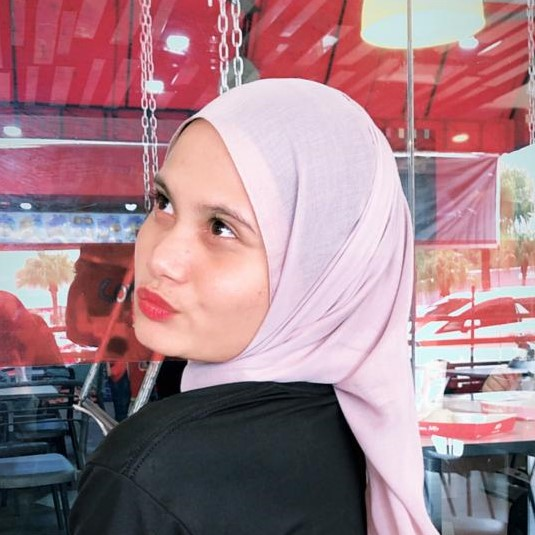

Hello, I'm AzrienaEzrin
I am Nur Azriena Ezrin but people call me mimi , an Information Management student who is highly motivated and passionate about the various fields I have explored.
Throughout my journey, I have always upheld the values of discipline, responsibility, and dedication in every task I undertake. I believe that learning never stops,
and every challenge is an opportunity to grow. With the skills I have developed and my deep interest in what I do, I strive to deliver my best work and contribute
meaningful value to any team or organization I become part of.
Let's build something amazing together!
Ezryn Journey
Since my school days, I have shown a strong interest in management, organization, and tasks related to information handling.
After completing my SPM, I pursued studies in Information Management at UiTM Kedah, having identified this field as the one that best aligns with my interests.
I have gained extensive knowledge in data management, information systems, documentation, record-keeping, communication, and technological skills. I also continuously
strive to improve my soft skills, including communication, teamwork, leadership, and critical thinking.
I enjoy participating in tasks or activities that help build self-confidence and provide new experiences, while applying discipline, responsibility, and dedication as guiding principles in both my studies and daily life.
I firmly believe that this journey is still ongoing, and every step brings me closer to the future I aspire to achieve.
What Drives Ezryn
Passion for Learning : Always enthusiastic about acquiring new knowledge and skills, especially in the field of Information Management.
Continuous Improvement: Constantly striving to enhance both technical skills and soft skills, such as communication, leadership, and critical thinking.
Long-Term Goals: Motivated to build a strong foundation for a successful and fulfilling career.
Personal Growth & Development: Driven by experiences and challenges that help me grow.
Making a Positive Impact: Inspired to contribute meaningfully to projects, teams, and any environment I am part of.